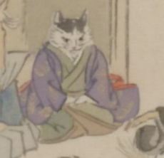

猫のような頭部を持つ化物。体には着物をまとい、座っている。着物から女と思われる。
著作者：靖々光一（山本光一）／出典：親書誌：U426_nichibunken_0098：滑稽百鬼夜行絵巻；コッケイヒャッキヤギョウエマキ／日付：2008／資源識別子：U426_nichibunken_0098_0003_0002
Copyright (c)2010- International Research Center for Japanese Studies, Kyoto, Japan. All rights reserved.